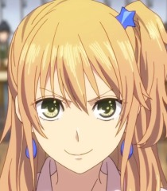
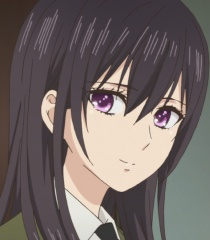
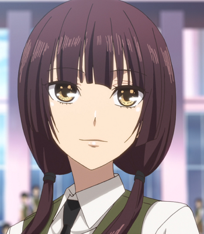
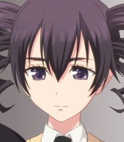
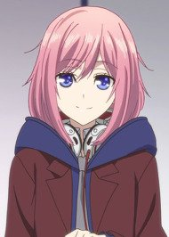
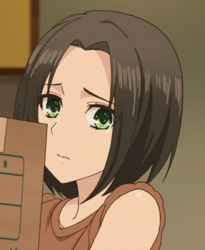
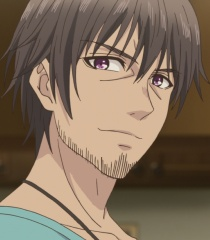
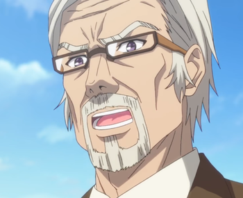

Yuzu Aihara
Yuzu Aihara (藍原あいはら 柚子ゆず Aihara Yuzu), née Okogi (小此木おこぎ), is the main protagonist in the manga Citrus. She has a younger stepsister, Mei Aihara, who moved into her house after her mother married Mei's father Shō Aihara.
Appearance
Yuzu is a teenage girl with dyed chestnut blonde hair. She has emerald green eyes and has two piercings in each ear. She is very fashionable and keeps up with the latest trends. Her natural hair color is brown, and during the 17th and 18th chapters of the manga, she temporarily wore a jet black wig.

Mei Aihara
Mei Aihara (藍原あいはら 芽衣めい Aihara Mei) is one of the main characters in the manga Citrus. She is the Student Council president and the younger stepsister of Yuzu Aihara.
Appearance
Mei is a teenager with straight silky black hair that goes beyond her shoulders. She also has purple eyes. Whilst in school she dresses formally in the uniform, and wears a wrist band on her right arm. When attending events outside of school, she wears plain ordinary clothes which attract little attention to her. she starts wearing a ring that Yuzu gave to her but only wears it outside of school.

Harumi Taniguchi
Harumi Taniguchi (谷口 はるみ Taniguchi Harumi) is a character in the manga Citrus. She is one of Yuzu Aihara's best friends. And the younger sister of Mitsuko.
Appearance
Harumi is a young girl with long plum (dark auburn in the anime) hair and hazel eyes. Her hair is styled in perfectly straight bangs that cover her forehead, with somewhat longer bangs on the sides of her head and ears. She usually wears her hair tied in a ponytail on the bottom of her head, but sometimes wears her hair loose or even in twintails, which are low-tied and usually fall over her shoulders. She also has a rather big chest, where she hides stuff banned by the school regulations, like makeup and her cellphone.

Himeko Momokino
Himeko Momokino (桃木野 姫子 Momokino Himeko) is a character in the manga Citrus. She is the Student Council vice-president and Mei Aihara's long-time friend. in chapter 36 she is now the Student Council President.
Appearance
Himeko is a teenage girl of short stature, with her most noticeable feature being her thick and bushy eyebrows. Her plum hair (black in the anime) is tied up in two short twin ringlets. Her eyes are magenta (dark purple in the anime). In school, she wears a neat uniform, yet outside of the academy she dresses in extravagant dresses and over-the-top outfits. She is rarely seen wearing anything casual.

Matsuri Mizusawa
Matsuri Mizusawa (水沢 まつり Mizusawa Matsuri) is a character in the manga series Citrus. When she was younger, she used to be babysat by Yuzu Aihara. She initially serves as an antagonist at first, but later becomes a supporting character in the series. In chapter 36 she now attends Aihara Academy.
Appearance
Matsuri is a young girl of short stature. She has shoulder-length light pink hair and blue eyes. Her dress sense is very casual, and she usually dresses up as a delinquent of sorts, mirroring to her sly personality. She commonly wears a pair of headphones around her neck or atop her head, and is never far from her phone.

Ume Aihara
Ume Aihara (藍原あいはら 梅うめ Aihara Ume), née Okogi (小此木おこぎ), is Yuzu's mother and Mei's stepmother. She is currently married with Shō Aihara.
Appearance
She is a tall adult woman with neck-length black hair styled in swept bangs. She has somewhat similar facial features to her daughter Yuzu.

Shō Aihara
Shō Aihara (相原 翔 Aihara Shō) is the father of Mei and the stepfather of Yuzu. He is currently married with Ume Aihara and he was a teacher at the Aihara Academy.
Appearance
Shō is a tall adult man with messy chin-length dark hair and facial hair stubbles. When he was still a teacher when Mei was younger, he had his hair slicked back and a clean shave.

Mei's Grandfather
Mei's Grandfather (芽衣の祖父 Mei no Sofu) is the father of Shō Aihara and the chairman of Aihara Academy.
Appearance
An aged man with a high class aura about him. Dresses in cleanly ironed out formal suits, and wears thin spectacles. He has a neatly trimmed beard and mustache, and stress lines are evident on his forehead. His hair short and is cleanly parted slightly towards the right.